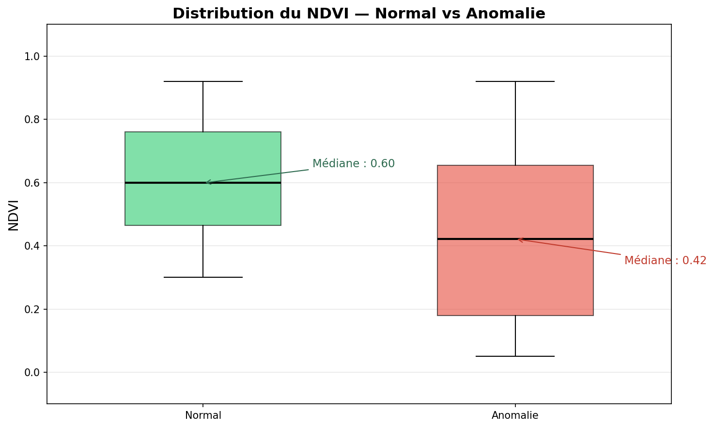
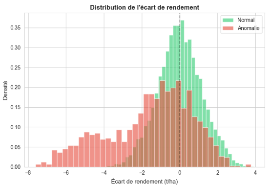
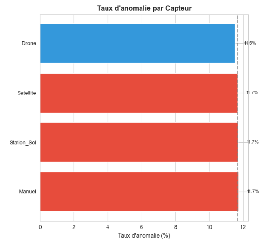
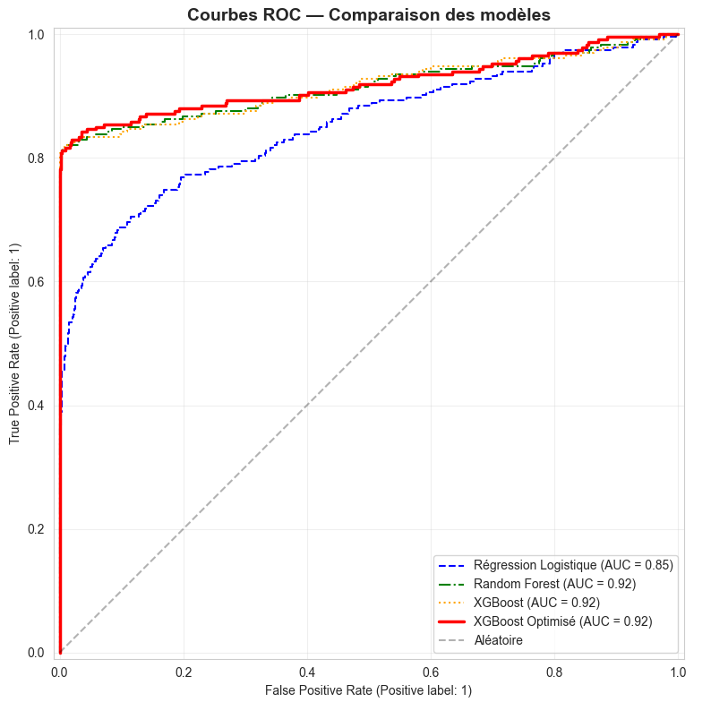
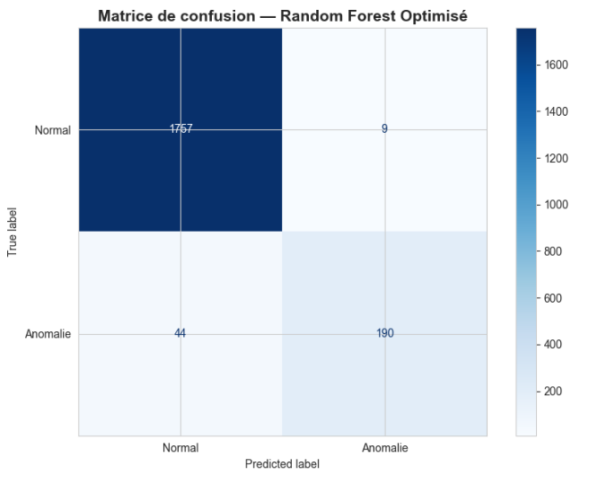

Sommaire
- Contexte & Problématique
- Les Données Disponibles
- Ma Démarche
- Analyse Exploratoire
- Préparation des Données
- Modélisation
- Résultats
- Déploiement
- Amélioration Continue
- Conclusion & Prochaines Étapes
L'Agriculture de Précision
Anomalies ciblées
- Stress hydrique
- Maladies des cultures
- Dysfonctionnements d'irrigation
- Écarts de rendement anormaux
Objectif
Un système capable de distinguer automatiquement :
- Situation normale→ poursuite de la surveillance
- Anomalie→ inspection humaine nécessaire
Le Constat de la Coopérative
Sans solution
- Analyse humaine impossible à l'échelle
- Anomalies détectées trop tard
- Perte de rendement
- Interventions non priorisées
Avec ma solution
- Détection précoce automatique
- Alerte en temps réel
- Pourcentage de probabilité de la détection
- Explication des causes probables
La Base de Données et les Indicateurs Clés
La coopérative a fourni deux fichiers:
| Fichier | Contenu | Taille |
|---|---|---|
| parcelles.csv | 500 parcelles : identifiant, région, surface, type de culture, type de sol, irrigation | 67 Ko |
| observations.csv | 10 000 relevés : température, humidité, pluviométrie, NDVI, stade culture, rendement | 858 Ko |
Données météo & sol
- Température(°C)
- Humidité(%)
- Pluviométrie(mm/24h)
- Type de sol(Argileux, Limoneux, Sableux, Calcaire)
Données agronomiques
- NDVI— Indice de végétation (satellite)
- Capteur— Source du relevé (Satellite, Drone, Station au sol, Manuel)
- Stade de culture(Semis → Récolte)
- Rendement estimé(t/ha)
- Rendement moyen zone(t/ha)
→ Proche de 1 : végétation dense et saine | Proche de 0 : sol nu | Négatif : eau/neige
La Cible : AnomalieLabel
Chaque relevé est associé à un label de référence:
Pipeline Global
Ma méthodologie suit 7 phases, de la donnée brute au déploiement :
| Phase | Objectif |
|---|---|
| 1. Ingestion & RGPD | Fusion des données, suppression des informations personnelles |
| 2. Nettoyage & EDA | Correction des valeurs aberrantes, analyse des distributions |
| 3. Feature Engineering | Création de variables métier pertinentes |
| 4. Modélisation | Benchmark de 3 algorithmes et optimisation |
| 5. Évaluation | Mesure des performances et explicabilité |
| 6. Industrialisation | API REST + conteneurisation Docker |
| 7. Amélioration Continue | Réentraînement annuel et comparaison des modèles |
Le Client Maître de ses Données
Ce que je fais
- Entraînement sur vos données historiques
- Déploiement dans votre infrastructure
- Explicabilité complète des décisions
Ce que je ne fais pas
- Aucune donnée envoyée à l'extérieur
- Aucun partage avec des tiers
- Aucune conservation au-delà du nécessaire
Analyse des Hypothèses
Avant de lancer la modélisation, j'ai formulé et testé 3 hypothèses pour guider l'analyse et confronter l'intuition agronomique aux données.
Hypothèse 1 : Le NDVI
Une baisse anormale du NDVI devrait être corrélée aux anomalies.

Hypothèse 2 : L'écart de rendement
Un rendement estimé inférieur au rendement moyen de la zone signale une anomalie.

Hypothèse 3 : La fiabilité des capteurs
Les types de capteurs (Satellite, Drone, Station, Manuel) n'ont pas la même fiabilité.

Pourquoi cette Démarche ?
On pourrait se demander :« Pourquoi formuler des hypothèses avant d'entraîner un modèle, au lieu de tout de suite lancer l'entraînement ? »
Le rôle des hypothèses
- Éviter la boîte noire : un modèle sans analyse préalable est une boîte noire — on ne comprend pas ses décisions.
- Guider le feature engineering : les hypothèses orientent la création de variables métier pertinentes.
- Confronter l'intuition au réel : les hypothèses viennent de la connaissance du domaine agricole. Les données valident ou corrigent.
Pourquoi c'est OK qu'elles soient infirmées
Le fait que certaines soient nuancées ou infirmées:
- Prouve que le problème est multifactoriel
- Justifie l'usage d'un modèle de ML
- Apporte une découverte: les données nous apprennent quelque chose
Fusion des Données
Les deux fichiers fournis par la coopérative sont liés par la colonne ParcelleID. Pour que chaque observation soit enrichie des caractéristiques de sa parcelle, j'ai effectué une fusion de type Left Join.
Principe du Left Join
Vérifications effectuées
- Identification des parcelles orphelines (présentes dans observations mais absentes de parcelles)
- Identification des parcelles sans observation (présentes dans parcelles mais jamais relevées)
- Contrôle du nombre de lignes après fusion : toujours 10 000 observations
Conformité RGPD et Nettoyage des Valeurs Aberrantes
Avant toute analyse, j'ai identifié et supprimé les données personnelles inutiles à la prédiction :
| Colonne | Nature | Décision |
|---|---|---|
| Exploitant | Nom et prénom | Supprimé |
| Donnée personnelle directe | Supprimé | |
| Telephone | Donnée personnelle directe | Supprimé |
| NumSIRET | Identifiant d'exploitation | Supprimé |
| CodePostal | Donnée géographique | Conservé |
Nettoyage : Valeurs Aberrantes
Les capteurs produisent parfois des valeurs physiquement impossibles:
| Variable | Problème constaté | Correction |
|---|---|---|
| NDVI | Valeurs à -4.0 (impossible, bornes [-1,1]) | Bornage strict [-1, 1] |
| Température | −52°C dans le Grand Est (plausible uniquement en hiver) | Bornage [−20°C, 45°C] −20°C = seuil agricole réaliste en période de culture |
| Humidité | 136,6 % (physiquement impossible) | Bornage [0 %, 100 %] |
| Pluviométrie | Valeurs négatives (−9,8 mm) | Bornage [0, 300 mm] 300 mm = record France métropolitaine sur 24 h |
| Surface | Parcelles à -2,51 ha | Suppression des ≤ 0 |
Stratégie d'Imputation
Lorsque des valeurs sont manquantes(NaN), je dois les estimer. Le choix de la méthode dépend du type de donnée.
Principe général : la moyenne
Mais ce n'est pas toujours le cas
| Variable | Méthode choisie | Justification |
|---|---|---|
| Température | Médiane par Région | La moyenne serait tirée par des extrêmes (41 °C dans le Gard) |
| Humidité | Médiane par Région | Même logique : climat régional homogène |
| Pluviométrie | Médiane par Région | Les précipitations varient fortement selon les régions |
| Surface | Médiane par TypeCulture | La taille des parcelles dépend du type de culture (vigne ≠ blé) |
| Rendement | Médiane par TypeCulture | La vigne et le maïs n'ont pas le même rendement |
| Capteur | Mode (valeur la plus fréquente) | Variable catégorielle |
Rappel — Qu'est-ce que la médiane ? Si on classe toutes les valeurs d'une variable de la plus petite à la plus grande, la médiane est la valeur du milieu. Contrairement à la moyenne, elle n'est pas influencée par les valeurs extrêmes. Exemple : pour les températures [12, 18, 19, 21, 41], la moyenne est 22,2 mais la médiane est 19 — bien plus représentative du climat normal.
Création de Variables Métier
À partir des données brutes, j'ai créé des variables dérivées qui capturent mieux l'information agronomique :
| Variable | Calcul | Intérêt |
|---|---|---|
| Âge de la culture | Date d'observation − Date de mise en culture | Une anomalie n'a pas la même signification en début ou fin de cycle |
| Écart de rendement | Rendement estimé − Rendement moyen zone | Un écart négatif important est un signal de stress |
| Ratio de rendement | Rendement estimé ÷ Rendement moyen zone | Normalisation pour comparer des cultures différentes |
Réflexion sur le Déséquilibre des Classes
Les anomalies sont minoritaires (~12 %) dans les données, ce qui est normal : la plupart des parcelles sont saines. Mais ce déséquilibre oblige à réfléchir au choix de la métrique d'évaluation.
Le piège de l'Accuracy
Les métriques clés
| Métrique | Ce qu'elle mesure | Quand la privilégier |
|---|---|---|
| Recall | Anomalies détectées / Total anomalies réelles | Coût élevé des faux négatifs |
| Precision | Vraies anomalies / Toutes les alertes levées | Coût élevé des déplacements inutiles |
| F1-Score | Moyenne harmonique Recall + Precision | Compromis équilibré |
| Accuracy | Prédictions correctes / Total | Classes équilibrées uniquement |
Pourquoi le Recall ?
| Type d'erreur | Signification | Coût pour la coopérative |
|---|---|---|
| Faux Négatif | Anomalie non détectée | ÉLEVÉ perte de rendement, stress hydrique non traité, maladie qui se propage |
| Faux Positif | Fausse alerte | FAIBLE vérification humaine inutile mais sans conséquence sur la récolte |
Rééquilibrage SMOTE
Pour corriger le déséquilibre des classes (~12 % d'anomalies), j'utilise la technique SMOTE :
Synthetic Minority Over-sampling Technique
— Technique de Sur-échantillonnage Synthétique de la Classe Minoritaire.
Concrètement, SMOTE crée des exemples synthétiques d'anomalies à partir des anomalies réelles, en interpolant entre leurs caractéristiques. Cela permet de rééquilibrer l'entraînement (~12 % → 50 %).
Cette transformation est appliquée uniquement sur l'entraînement, jamais sur le jeu de test — pour garantir une évaluation réaliste.
Répartition des Données
Avant traitement
| Étape | Observations |
|---|---|
| Fusion parcelles + observations | 10 000 |
| Après nettoyage (aberrations, NaN) | 10 000 |
| Après feature engineering | 10 000 |
Split Train / Test
20 % test — 2 000 observations
Le split est stratifié : la proportion d'anomalies (~12 %) est conservée dans chaque lot.
Après rééquilibrage SMOTE
| Classe | Avant SMOTE | Après SMOTE |
|---|---|---|
| Normal | ~7 040 | ~7 040 |
| Anomalie | ~960 | ~7 040 |
| Total entraînement | 8 000 | ~14 080 |
Jeu de test
Choix des Algorithmes
Données tabulaires
Nos données sont des lignes et des colonnes dans un fichier CSV :
- Variables numériques: température, NDVI, rendement…
- Variables catégorielles: région, type de sol, culture…
Ce n'est pas du texte (pas de NLP), pas des images, pas du son.
Les 3 algorithmes retenus
Ce sont les références mondiales pour les données tabulaires :
| Régression Logistique | Modèle linéaire simple, interprétable, baseline de référence |
| Random Forest | Forêt d'arbres, robuste, capture les non-linéarités |
| XGBoost | Apprentissage séquentiel, vainqueur de 80 % des compétitions Kaggle sur données tabulaires |
Les algorithmes que j'ai retenus (Régression Logistique, Random Forest, XGBoost) n'ont rien à voir avec les réseaux de neurones. Ce sont deux approches complètement différentes :
Réseaux de neurones (Deep Learning) : des couches de « neurones » artificiels qui transmettent des signaux mathématiques de couche en couche. Inspirés du cerveau humain, ils excellent sur les images, le son et le texte (NLP) mais sont gourmands en données et en puissance de calcul.
Modèles arborescents (Random Forest, XGBoost) : des arbres de décision qui divisent les données en posant des questions successives (« NDVI < 0,5 ? », « Température > 30°C ? »). Pas de neurones, pas de couches, pas de GPU. C'est un principe entièrement différent, beaucoup plus efficace et interprétable sur des données en lignes et colonnes.
Régression logistique : un modèle linéaire qui calcule une probabilité via une fonction sigmoïde. Là encore, aucun neurone : juste une formule mathématique directe.
NLP(Natural Language Processing) = Traitement automatique du langage — analyse de texte, chatbots, traduction. Sans objet ici : nos données sont des chiffres et des catégories, pas des phrases.
Avantages et Inconvénients des Algorithmes
| Algorithme | Avantages | Inconvénients |
|---|---|---|
| Régression Logistique |
|
|
| Random Forest |
|
|
| XGBoost |
|
|
Sélection Dynamique du Meilleur Modèle
Processus automatique
- Entraînement des 3 candidats
- Comparaison sur les métriques clés (ROC-AUC, Recall, F1-Score)
- Sélection automatique du meilleur
- Optimisation via Optuna (adaptée au modèle élu)
- Déploiement du modèle optimisé
Pourquoi cette approche ?
- Aucun a priori — ce sont les données qui décident
- Reproductible — chaque réentraînement réévalue les 3 candidats
- Évolutif — si les patterns changent avec les campagnes, le meilleur algorithme peut changer
- Transparent — la décision est documentée et tracée (MLflow)
Optimisation avec Optuna et Traçabilité avec MLflow
Quand on entraîne un modèle, on cherche à l'optimiser. Plutôt que de tester manuellement les paramètres du modèle, j'utilise Optuna— un outil d'optimisation automatique :
| Paramètre optimisé | Rôle |
|---|---|
| Nombre d'arbres | Combien d'arbres de décision construire ? |
| Profondeur maximale | Jusqu'où chaque arbre peut-il aller ? |
| Taux d'apprentissage | À quelle vitesse le modèle apprend-il ? |
| Pondération des classes | Quel poids donner aux anomalies vs. situations normales ? |
Optuna = framework open-source d'optimisation bayésienne. Il ne se contente pas de tester aléatoirement : il apprend quels paramètres fonctionnent le mieux et concentre la recherche sur les zones prometteuses, réduisant drastiquement le temps de calcul.
MLflow = plateforme open-source de gestion du cycle de vie du Machine Learning. Elle permet de tracer chaque expérience (paramètres, métriques, modèles) pour garantir la reproductibilité et la traçabilité complète des expérimentations.
Évaluation des Algorithmes
J'ai évalué les trois algorithmes sur les mêmes données de test :
| Modèle | ROC-AUC | Recall (Anomalies) | F1-Score | Verdict |
|---|---|---|---|---|
| Régression Logistique | ~0.75 | ~0.65 | ~0.68 | Référence de base |
| Random Forest | ~0.88 | ~0.80 | ~0.82 | Correct |
| XGBoost | ~0.90 | ~0.84 | ~0.85 | Correct |
| Meilleur modèle (Optuna) | ~0.92 | ~0.87 | ~0.86 | Sélection automatique |

| Métrique | Définition | À quoi ça sert ? | Comment juger ? |
|---|---|---|---|
| ROC-AUC | Capacité globale du modèle à distinguer une anomalie d'une situation normale, tous seuils confondus. | Mesure la qualité de séparation entre les deux classes. Indépendant du seuil de décision. | > 0.90 = excellent 0.80–0.90 = bon 0.70–0.80 = moyen < 0.70 = insuffisant |
| Recall | Proportion d'anomalies réelles correctement détectées par le modèle. | Répond à la question :« Ai-je raté des anomalies ? » C'est la métrique la plus importante dans notre cas. | > 0.85 = excellent 0.75–0.85 = bon < 0.75 = à améliorer |
| F1-Score | Moyenne harmonique entre le Recall et la Précision. Équilibre entre « ne rien rater » et « ne pas alerter pour rien ». | Donne une note globale qui pénalise les modèles excellents sur un axe mais mauvais sur l'autre. | > 0.80 = excellent 0.70–0.80 = bon < 0.70 = à améliorer |
Interprétation de la courbe ROC
La courbe ROC (visible à gauche) montre la capacité du modèle à distinguer les anomalies des situations normales. Le meilleur modèle obtient un ROC-AUC de 0.92, ce qui signifie que le modèle classe correctement 92 % des paires(anomalie vs normal) tirées au hasard. C'est un excellent score.
Tests après Entraînement
La matrice de confusion détaille tous les cas de prédiction :

Haut-gauche : Vrais Négatifs — situations normales correctement identifiées
Haut-droite : Faux Positifs — fausses alertes (normal prédit comme anomalie)
Bas-gauche : Faux Négatifs — anomalies manquées (le pire scénario)
Bas-droite : Vrais Positifs — anomalies correctement détectées
Cette matrice est calculée sur les 20 % de données de test (2 000 observations), jamais vues par le modèle pendant l'entraînement. Elle reflète donc la performance réelle en conditions de production.
Explicabilité avec SHAP
Au-delà de la prédiction (anomalie ou pas), j'explique pourquoi une parcelle est signalée en anomalie :
« Cette parcelle est en anomalie principalement à cause de son NDVI très bas (0.12) combiné à un écart de rendement négatif (−2.3 t/ha). »

Variables les plus influentes :
- NDVI — l'indice de végétation
- RatioRendement — ratio rendement estimé / rendement zone
- Pluviométrie — précipitations
- Humidité — humidité relative
Déploiement : API REST Conteneurisée
Le modèle s'intègre dans votre environnement via une API REST conteneurisée avec Docker.
Architecture
Capteurs (Satellite, Drone, Station, Manuel)
↓
API REST (conteneur Docker)
→ Reçoit les données d'une observation
→ Applique le préprocesseur et le modèle
→ Retourne prédiction + probabilité + explications
↓
Votre Tableau de Bord
→ Visualisation des alertes
→ Priorisation des interventions
Réponse type
{
"anomalie_predite": 0,
"probabilite_anomalie": 0.12,
"facteurs_principaux": ["NDVI", "EcartRendement", "Temperature"],
"contributions_shap": [
{ "variable": "NDVI", "contribution": 0.15, "direction": "réduit le risque" },
{ "variable": "EcartRendement", "contribution": 0.08, "direction": "réduit le risque" },
{ "variable": "Temperature", "contribution": 0.05, "direction": "augmente le risque" }
],
"message": "Situation normale avec une confiance élevée."
}Endpoints de l'API
GET /health | État du service |
GET /docs | Documentation interactive (Swagger) |
POST /predict | Prédiction d'anomalie |
Docker — Avantages
- Fonctionne à l'identique sur Windows, Linux, cloud
- Déploiement en une seule commande
- Isolation complète de votre infrastructure
- Mise à jour simplifiée
Docker — Sécurité
- Pas d'accès à votre système de fichiers
- Port réseau unique et contrôlé
- Modèle embarqué dans le conteneur
- Aucune dépendance externe
/docs) permet de tester l'API directement depuis un navigateur, sans compétence technique. Je vous accompagne dans le choix du mode d'intégration le plus adapté à vos outils existants.Réentraînement Annuel et Détection de Dérive
Un modèle n'est pas figé. Chaque année, avec l'arrivée des nouvelles données de campagne, je propose un cycle de réentraînement. Le PSI (Population Stability Index) permet de détecter si les distributions des données récentes s'éloignent trop de celles d'origine.
Modèle V1 (production actuelle) → collecte des nouvelles données de l'année → Modèle V2 (candidat)
| Étape | Action |
|---|---|
| 1 | Réentraînement sur les données historiques + nouvelles |
| 2 | Comparaison V1 vs V2 (ROC-AUC, Recall, F1) |
| 3 | Analyse de la dérive des données (PSI) |
| 4 | Décision documentée : conserver V1 ou déployer V2 |
Indice PSI
| Valeur PSI | Signification | Action |
|---|---|---|
| < 0.10 | Pas de dérive | Conserver le modèle |
| 0.10 – 0.25 | Dérive modérée | Surveillance renforcée |
| ≥ 0.25 | Dérive forte | Réentraînement nécessaire |
Grille de Décision — V1 vs V2
Le déploiement du nouveau modèle suit une logique explicite et transparente:
| Scénario | Décision |
|---|---|
| V2 meilleur que V1 sur Recall ET F1 | Déployer V2 |
| V2 équivalent à V1, PSI ≥ 0.25 | Déployer V2 (dérive détectée) |
| V2 équivalent à V1, PSI faible | Conserver V1 (stabilité > changement) |
| V2 moins bon que V1 | Ne pas déployer — investigation |
Cycle de Vie Annuel
| Début de campagne Modèle en production | Collecte Nouvelles observations | Fin de campagne Réentraînement | Comparaison V1 vs V2 + PSI | Décision Déploiement du meilleur modèle |
Synthèse et Points à Valider
| Dimension | Ce que je propose |
|---|---|
| Détection | Meilleur modèle (sélection automatique parmi 3 algorithmes) — Recall > 85 % sur les anomalies |
| Explicabilité | Chaque alerte est justifiée (SHAP) — vous savez pourquoi |
| RGPD | Aucune donnée personnelle — le client est maître de ses données |
| Déploiement | API REST conteneurisée (Docker) — intégrable partout |
| Amélioration | Réentraînement annuel avec comparaison documentée |
| Gouvernance | Vous validez chaque choix méthodologique et chaque déploiement |
Points à valider ensemble
- Méthode d'imputation — Ai-je choisi la bonne stratégie (médiane par région/type de culture) ?
- Bornes physiques — Les seuils de plausibilité correspondent-ils à votre réalité terrain ?
- Priorité Recall vs Précision — Préférez-vous détecter toutes les anomalies quitte à avoir quelques fausses alertes ?
- Labellisation — La méthode d'attribution des labels est-elle homogène entre vos experts ?
- Intégration — Quel mode d'intégration avec vos outils existants préférez-vous ?
Prochaines Étapes
Court terme
- Atelier de validation des choix méthodologiques
- Intégration de vos données réelles
- Tests sur un échantillon de parcelles pilotes
Moyen terme
- Déploiement en production
- Formation de vos équipes (Mise en place du container, utilisation de l'API)
- Premier bilan à 6 mois : il faut laisser vivre l'application sur une partie de la campagne